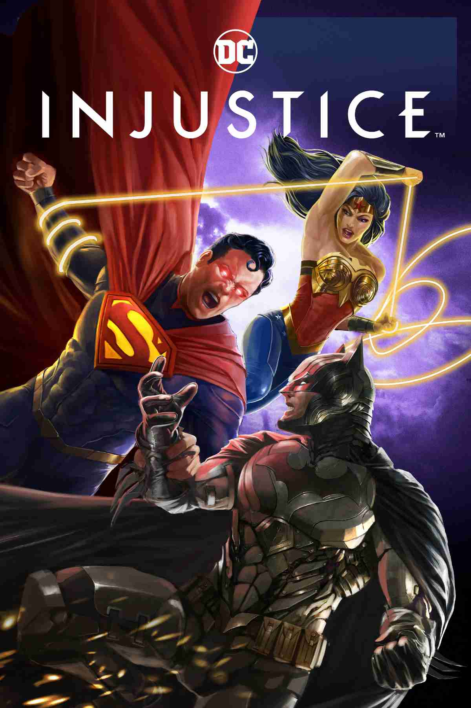
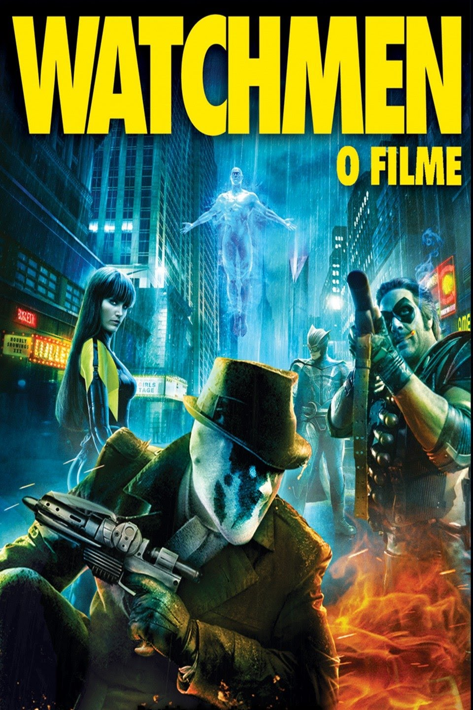

O Esquadrão Suicida
O governo envia os supervilões mais perigosos do mundo para a remota ilha de Corto Maltese, repleta de inimigos. Armados com armas de alta tecnologia, eles viajam pela selva perigosa em uma missão de busca e destruição com o Coronel Rick Flag.
| 
Batman vs Superman
O confronto entre Superman e Zod em Metrópolis fez a população mundial se dividir sobre a presença de extraterrestres na Terra. Enquanto muitos consideram Superman um novo deus, há aqueles que entendem ser extremamente perigosa a existência de um ser tão poderoso sem qualquer tipo de controle.
| 
Batman: Cavaleiro das Trevas
Batman tem mantido a ordem na cidade de Gotham. Mas um jovem e anárquico criminoso conhecido como Coringa ganha força e decide instaurar um verdadeiro caos na cidade. O justiceiro será testado psicologicamente e fisicamente como nunca fora antes em um confronto bastante pessoal.
| 
Coringa
Isolado, intimidado e desconsiderado pela sociedade, o fracassado comediante Arthur Fleck inicia seu caminho como uma mente criminosa após assassinar três homens em pleno metrô. Sua ação inicia um movimento popular contra a elite de Gotham City, da qual Thomas Wayne é seu maior representante.
| 
O Homem de Aço
A nave espacial da criança aterrissa na fazenda de Jonathan e Martha Kent, que o batizam de Clark e o criam como seu próprio filho. Apesar das habilidades extraordinárias levarem o Clark adulto a viver à margem da sociedade, ele precisa se tornar um herói para salvar aqueles que ama de uma terrível ameaça.
|

Batman: O Cavaleiro das Trevas Ressurge
Após ser culpado pela morte de Harvey Dent e passar de herói a vilão, Batman desaparece. As coisas mudam com a chegada de uma ladra misteriosa, a Mulher-Gato, e Bane, um terrorista mascarado, que fazem Batman abandonar seu exílio forçado.
| 
Injustice
Em um mundo alternativo, o Coringa engana Superman para matar Lois Lane, fazendo com que o herói entre em um caminho de destruição.
| 
Mulher-Maravilha 1984
Em 1984, durante a Guerra Fria, entrando em conflito com dois grande inimigos – o empresário de mídia Maxwell Lord e a amiga que virou inimiga Barbara Minerva/Cheetah
| 
Batman Begins
O jovem Bruce Wayne viaja para o Extremo Oriente, onde recebe treinamento em artes marciais do mestre Henri Ducard, um membro da misteriosa Liga das Sombras. A verdadeira proposta da Liga é a destruição completa da cidade de Gotham, Wayne retorna à sua cidade para salva-la.
| 
Watchmen - O Filme
A trama de Watchmen é situada nos EUA de 1985, um país no qual aventureiros fantasiados seriam realidade. O país estaria vivendo um momento delicado no contexto da Guerra Fria e em via de declarar uma guerra nuclear contra a União Soviética.
|

The Batman
Após dois anos espreitando as ruas como Batman, Bruce Wayne se encontra nas profundezas mais sombrias de Gotham City. Com poucos aliados confiáveis, o vigilante solitário se estabelece como a personificação da vingança para a população.
| 
Batman: Alma do Dragão
Batman enfrenta inimigos do passado com a ajuda de três antigos colegas: o treinador de artes marciais Richard Dragon, Ben Turner e Lady Shiva.
| 
Superman - O Homem do Amanhã
O jovem Clark Kent é estagiário no Planeta Diário enquanto aprende a salvar a cidade de Metrópolis.
| 
Liga da Justiça: Guerra de Apokolips
A Liga da Justiça sempre foi a primeira e última defesa da Terra, mas, com a chegada iminente de Darkseid, tudo está para mudar. Após a destruição da Terra, o grupo se reune para derrubar o tirano e salvar os membros remanescentes da equipe.
| 
Liga da Justiça vs Jovens Titãs
Robin é forçado a trabalhar com os Jovens Titãs após comprometer uma missão da Liga da Justiça. Mas o vilão Trigon passa a controlar todos os membros da Liga, fazendo com que as duas equipes se enfrentem.
|

{kind=link}